لماذا يتدهور الطفل فجأة؟
أبكر مؤشرات التدهور
من EWS إلى PEWS
النبض وزمن إعادة الترويّة
التقييم والاستجابة والنماذج
AVPU وما بعدها
المحاور الثمانية ومنهجية ABCDE
خمس استمارات حسب العمر
الدرجة واللون والإجراء
ثلاث حالات سريرية
لماذا يُعَدّ الأطفال الفئة الأكثر عرضة للتدهور الصامت داخل المستشفى
يُعَدّ الأطفال من أكثر الفئات عرضة للتدهور الصحي السريع داخل المستشفيات، وغالبًا ما تسبق حالات التوقف القلبي أو الفشل التنفسي علاماتٌ تحذيرية يمكن ملاحظتها في العلامات الحيوية أو السلوك العام للطفل.
يمتلك جسم الطفل آليات تعويضية قوية تُخفي التدهور الحقيقي حتى اللحظة الأخيرة، فتبدو الحالة مستقرة ظاهريًا.
قد لا يتمكّن الطفل من وصف الأعراض والتغيرات التي يشعر بها بدقة، مما يزيد صعوبة الاكتشاف المبكر.
عند استنفاد التعويض يحدث الهبوط بسرعة كبيرة، وتضيق النافذة الزمنية المتاحة للتدخل الفعّال.
تكمن خطورة الحالات المرضية لدى الأطفال في كونهم يُعرَفون إكلينيكيًا بـ«المعوّضين الصامتين»؛ حيث تعمل آليات فسيولوجية قوية — مثل زيادة سرعة ضربات القلب وتضييق الأوعية الدموية الطرفية — على إخفاء مؤشرات التدهور الحقيقي لآخر لحظة.
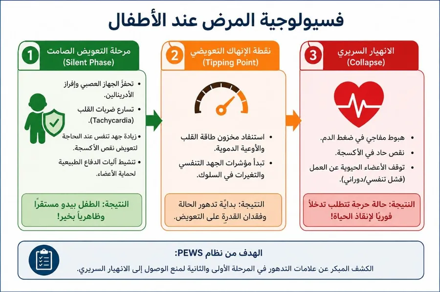
أداة تساعد الممرضين والأطباء على اكتشاف التغيرات المبكرة والتصرف بسرعة قبل حدوث انهيار سريري — لا على الحدس، بل على قياس موحّد يفهمه الجميع.
نظام Pediatric Early Warning Score (PEWS) هو أداة تقييم سريرية عالمية تعتمد بشكل أساسي على قياس العلامات الحيوية للطفل، وتحوّلها من مجرد أرقام منفردة إلى درجة واضحة تحدّد مستوى الخطورة وتوقيت التدخل المناسب.
هذا هو التحويل الذي يقوم به النظام
من أنظمة الإنذار المبكر للبالغين إلى نماذج مخصّصة للأطفال
قدّم Morgan وزملاؤه نظام الإنذار المبكر بهدف الكشف المبكر عن التدهور السريري، عبر تقييم مجموعة من العلامات الحيوية وتحويلها إلى درجة رقمية تساعد الكادر الصحي على التعرّف على المرضى المعرّضين للخطر والتدخل في الوقت المناسب.
طوّر Subbe وزملاؤه النظام إلى الإنذار المبكر المعدّل، فأصبح أكثر تنظيمًا وتحديدًا، وتم التحقق من فعاليته في التعرّف على المرضى المعرّضين للتدهور. ساهم ذلك في تحسين القدرة على تحديد الحالات التي تتطلب مراقبة أو تدخلًا مبكرًا.
الاختلافات الفسيولوجية الواضحة بين الأطفال والبالغين — ولا سيما تغيّر القيم الطبيعية للعلامات الحيوية بحسب العمر — فرضت حاجة ملحّة إلى نظام مخصّص للأطفال.
مع انتشار الأنظمة لدى البالغين، بدأت أنظمة PEWS بالتطور بهدف الكشف المبكر عن التدهور السريري لدى الأطفال، مراعيةً التغيرات الطبيعية في العلامات الحيوية بحسب عمر الطفل.
تطوّرت الأنظمة لاحقًا في مؤسسات ودول عديدة، وظهرت نماذج تختلف في مكوّناتها وطرق احتساب درجاتها. ولم يعد النظام يقتصر على حساب درجة الخطر، بل ارتبط بمستويات محدّدة من المراقبة والتصعيد والاستجابة السريرية.
نموذج واحد يجمع القياس والدرجة والتصعيد في صفحة واحدة أمام سرير الطفل.
اضغط على الصورة لعرضها بحجم كامل.
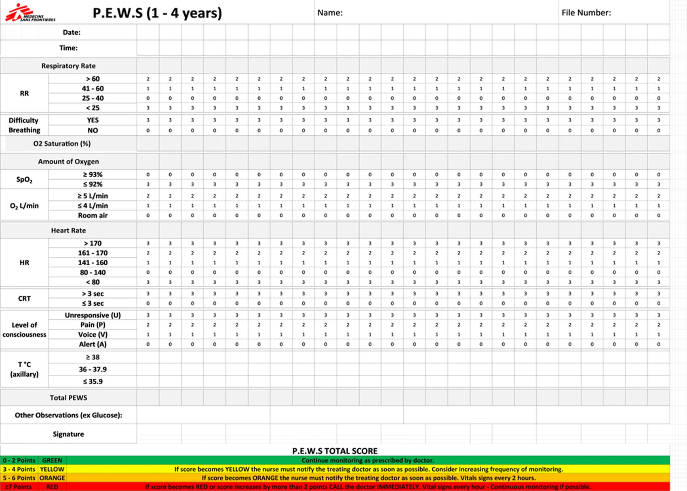
كأداة داعمة للكشف المبكر عن تدهور حالة الأطفال.
ضمن المبادرات المتعلقة بتحسين رعاية الأطفال وتقليل المضاعفات.
في برامجها الخاصة بصحة الطفل ورعاية المستشفيات.
ما هو نظام الإنذار المبكر، وممّ يتكوّن؟
Physiological Indicators
العلامات الحيوية والسلوكية التي يُبنى عليها التقييم كله.
Scoring System
يختصّ بقياس المؤشرات وتحويلها إلى قيم كمّية يمكن الاعتماد عليها في تحديد مستوى الخطورة.
Response System
يتولّى تفسير نتائج التقييم وتوليد ردود فعل مناسبة وفقًا للمعطيات.
يتكوّن النظام من خمسة نماذج تغطّي مختلف الفئات العمرية للأطفال.
سبب تعدّد النماذج: اختلاف القيم الطبيعية للعلامات الحيوية بين الأعمار.
المحاور الثمانية الأساسية ومنهجية التقييم ABCDE
Respiratory Rate
Respiratory Effort
Amount of Oxygen
Oxygen Saturation
Heart Rate
Capillary Refill Time
Level of Consciousness
Body Temperature
إضافةً إلى الملاحظات السريرية الأخرى Other Observations: مثل قياس مستوى السكر في الدم، ضغط الدم، أو اليرقان — وتُقاس حسب الحالة الصحية للمريض في ردهات الأطفال.
Airway & Breathing
يُتحقَّق من سلامة مجرى الهواء وقدرة المريض على التنفس بشكل فعّال: معدل التنفس، جهد التنفس، الحاجة إلى الأكسجين، وتشبّع الأكسجين — للكشف المبكر عن قصور أو تدهور تنفسي.
Circulation
يُقيَّم معدل ضربات القلب وزمن إعادة الامتلاء الشعيري، باعتبارهما مؤشرَين على استقرار الجهاز القلبي الوعائي وكفاية تروية الأنسجة.
Disability
فحص الحالة العصبية بما في ذلك مستوى الوعي والاستجابة، للكشف عن أي تدهور عصبي حاد.
Exposure
مراقبة درجة حرارة الجسم وغيرها من الملاحظات السريرية ذات الصلة، مثل سكر الدم أو ضغط الدم أو وجود نوبات اختلاجية، وفقًا لحالة الطفل.
الدرجة ← اللون ← من نُبلغ ← ماذا نفعل عند السرير
يتولّى تفسير نتائج التقييم لتحديد مستوى الخطر: منخفض / متوسط / مرتفع.
| الدرجةScore | اللونColor | الإجراء المطلوبWho to Notify & What to Do |
|---|---|---|
| 0 – 2 | أخضر | استمرّ بالمراقبة حسب تعليمات الطبيب. |
| 3 – 4 | أصفر | إذا أصبح اللون أصفر يجب على الممرضة إخطار الطبيب المعالج في أسرع وقت ممكن، كما يُنصح بزيادة تكرار المراقبة. |
| 5 – 6 | برتقالي | إذا أصبح اللون برتقاليًا يجب على الممرضة إخطار الطبيب في أسرع وقت ممكن، وقياس العلامات الحيوية كل ساعتين. |
| ≥ 7 | أحمر | إذا أصبح اللون أحمر أو زاد بمقدار نقطتين أو أكثر مقارنةً بالقياس السابق: الاتصال بالطبيب فورًا، قياس العلامات الحيوية كل ساعة، والمراقبة المستمرة إذا أمكن. |
سلسلة التصعيد
عند حدوث أي تغيّر في حالة الطفل أو في درجة النظام، يجب تعديل خطة تكرار المراقبة بشكل واضح وموثّق.
Airway & Breathing — أبكر مؤشرات التدهور السريري لدى الأطفال
تُعدّ التغيرات في معدل التنفس أو جهد التنفس من أوائل مؤشرات التدهور السريري لدى الأطفال. فاضطرابات التنفس غالبًا ما تسبق هبوط الأكسجة أو توقّف القلب، مما يجعل مراقبة هذا الجهاز أداةً حاسمة للكشف المبكر عن الخطر.
أظهرت دراسة Dow et al. (2020) أن معدل التنفس هو أبكر المؤشرات على التدهور. قارنت الدراسة معدل التنفس بمعدل ضربات القلب وضغط الدم لدى أطفال تدهورت حالتهم واحتاجوا رعاية حرجة، فوجدت أن ارتفاع معدل التنفس كان العلامة الحيوية الأكثر ارتباطًا بالتدهور — بغضّ النظر عن التشخيص الأساسي.
نافذة زمنية واسعة للتدخل — إن تمّت ملاحظتها وتوثيقها
إدراج هذه المؤشرات يعزّز دقة النظام في تحديد الحالات الحرجة ويساعد الممرضين على التدخل السريع قبل حدوث التدهور.
Respiratory Rate
Respiratory Effort
Amount of Oxygen
Oxygen Saturation
علامات الضائقة التنفسية — هل يبذل الطفل جهدًا إضافيًا للتنفس؟
تسرّع النفس Tachypnoea أو بطء التنفس Bradypnea، والتنفس عن طريق الفم Mouth breathing.
اتساع فتحات الأنف Nasal Flaring، انكماش العضلات بين الأضلاع أو عضلات العنق Accessory muscles، الشحوب أو الزرقة، برودة الأطراف، التعرّق.
الصفير Wheeze، والأنين Grunting — صوت منخفض النبرة يحاول به الطفل إبقاء الحويصلات مفتوحة أثناء الزفير، وهو علامة على زيادة جهد التنفس.
ضع الفيديو باسم video.mp4 داخل مجلد video، أو اختر الملف من جهازك الآن.
يُستخدم اللاقط الشريطي/اللاصق Flexible Wrap Sensor الذي يلتفّ حول قدم الطفل أو كفّ يده بدلًا من القرّاصة.
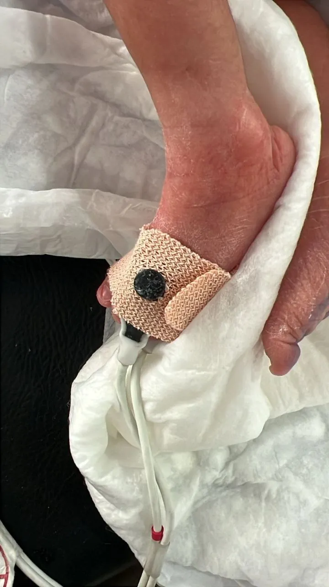
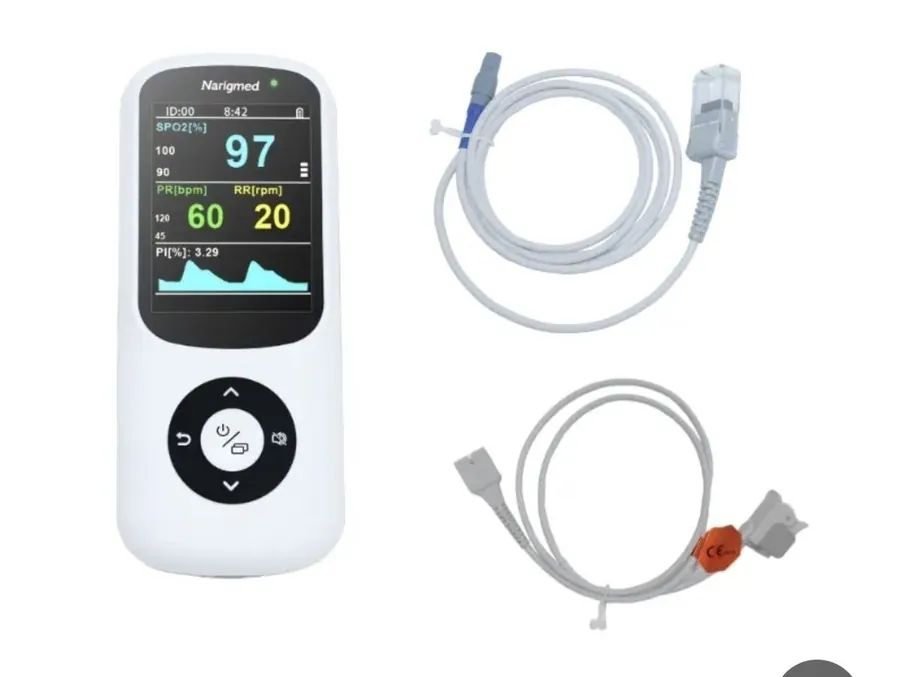
Toddlers
يُوضع المحسّس اللاصق أو الشريط حول إبهام القدم Great Toe لضمان ثبات القراءة مع حركة الطفل.
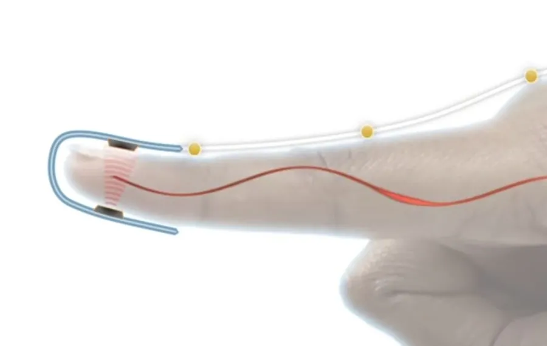
Children
تُستخدم القرّاصة المخصّصة للأطفال Pediatric Finger Clip على أصابع اليد — السبّابة أو الوسطى.
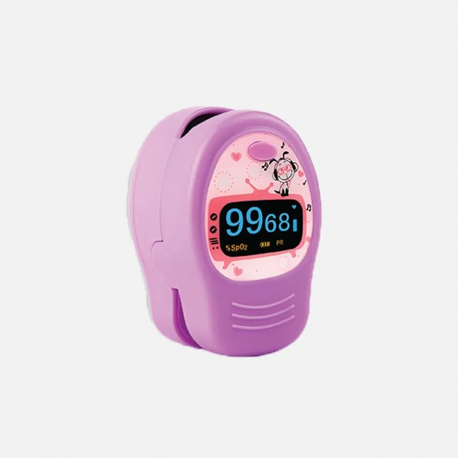
النبض وزمن إعادة امتلاء الشعيرات الدموية
النبض الطبيعي هو عدد ضربات القلب خلال الدقيقة الواحدة.
علامة مبكرة Early Sign، وهي جزء من آلية التعويض التي يحاول بها جسم الطفل الحفاظ على التروية.
علامة خطرة جدًا ومتأخّرة Late Sign — تدلّ على أن التعويض قد فشل.
مسار التدهور
باستخدام إصبعَي السبّابة والوسطى، يتم تحديد أحد الشرايين السطحية مثل الشريان الكعبري Radial، أو السباتي في الرقبة، أو الفخذي Femoral في الحالات الطارئة.
حساب المعدل: يُعدّ النبض خلال 30 ثانية باستخدام عقرب الثواني، ثم يُضرب العدد في 2 للحصول على معدل النبض بالدقيقة.
الطريقة الأكثر شيوعًا في الردهات، وتُعطي قراءة النبض وتشبّع الأكسجين معًا.
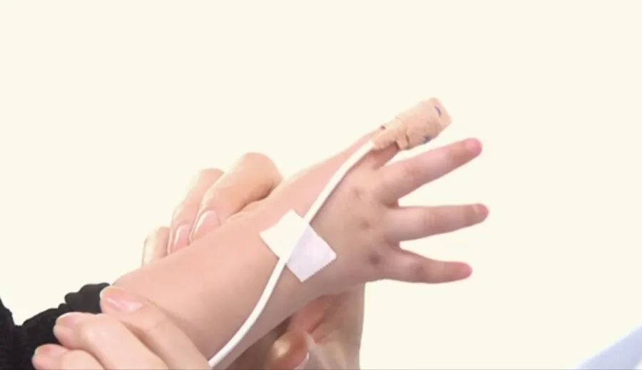
| الفئة العمريةAge Group | موقع النبض المفضّلPreferred Pulse Site |
|---|---|
| أقل من سنة (Infants) | قمّي / قلبي — Apical (Heart) |
| من 1 إلى سنتين (Toddlers) | قمّي أو عضدي — Apical or Brachial |
| من 2 إلى 6 سنوات (Preschoolers) | قمّي أو عضدي — Apical or Brachial |
| من 6 إلى 12 سنة (School-age) | شعاعي (مفضّل)، أو قمّي إذا كان النبض غير منتظم — Radial, or Apical if irregular |
لماذا نُقيّم الـCRT؟
بطء الـCRT — أكثر من ثانيتين أو ثلاث ثوانٍ — يعني أن الأوعية الدموية الطرفية منقبضة بشدّة وأن التروية بدأت تضعف.
يساعد في الحكم الفوري على مدى استجابة قلب الطفل وقوة ضخّه للدم، وهو معيار أساسي ضمن نظام PEWS لتقييم الحالة العامة.
عند إعطاء سوائل وريدية Fluid Resuscitation، يُعدّ تحسّن الـCRT وعودته إلى أقل من ثانيتين دليلًا سريريًا واضحًا وسريعًا على استجابة جيدة واستقرار الدورة الدموية.
الحالة العصبية، درجة الحرارة، والملاحظات السريرية الداعمة
يُقيَّم من خلال ملاحظة استجابة الرضيع وسلوكه العام، دون الاعتماد على أوامر لفظية.
خامل، مرتخٍ، ذو توتر عضلي ضعيف وحركة عفوية قليلة.
ضعف في الرضاعة أو قلة الاهتمام بالتغذية.
سريع الانزعاج، كثير البكاء، صعب التهدئة.
منتبه، يتفاعل مع المحيط، ذو توتر عضلي طبيعي وسلوك تغذية سليم.
أي تغيّر مفاجئ في الوعي — حتى لو بسيط، مثل النعاس غير المعتاد — يجب توثيقه فورًا.
| الترميز | المستوى | الدرجة |
|---|---|---|
| A | متيقّظ — Alert | 0 |
| V | يستجيب للصوت — Response to Voice | 1 |
| P | يستجيب للألم — Response to Pain | 2 |
| U | فاقد للاستجابة — Unresponsive | 3 |
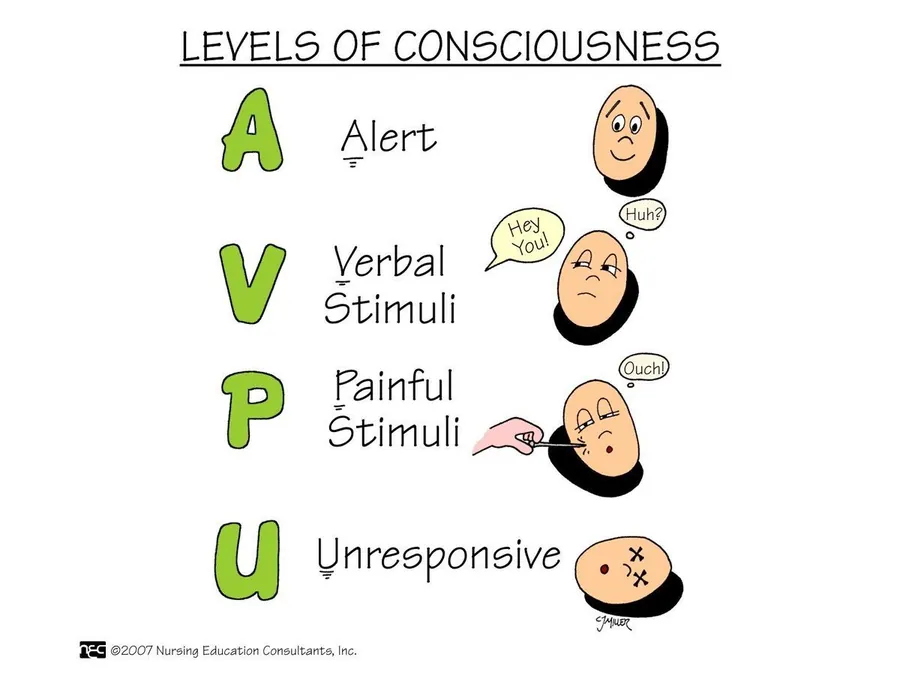
كل تدرّج من A نحو U يرفع درجة الـPEWS ويقرّب الطفل من الترياج الأحمر.
يُقصد بها قياس درجة حرارة الجسم المحيطية للمريض. يُفضَّل القياس عن طريق الإبط؛ أما عند الشكّ بانخفاض الحرارة Hypothermia لدى الرضّع، فيجب تأكيدها بقياس درجة الحرارة عن طريق المستقيم.
ملاحظات تكميلية أو داعمة لتقييم الطفل، تُستخدم لتوثيق أي علامات سريرية أخرى قد تشير إلى تدهور الحالة، أو قياسات إضافية تُؤخذ في بعض الحالات الخاصة — مثل اليرقان، سكر الدم، أو ضغط الدم.
خمس استمارات — لأن القيم الطبيعية تتغيّر مع العمر
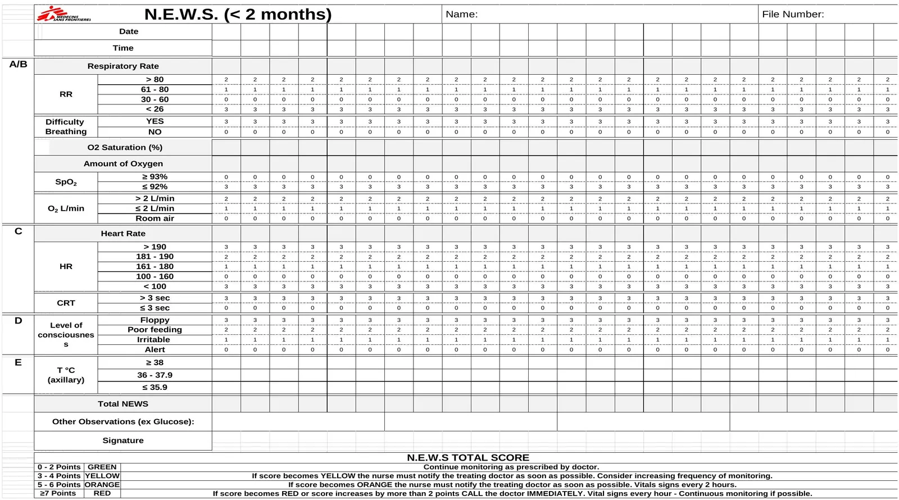
اضغط على الاستمارة لعرضها بحجم كامل.
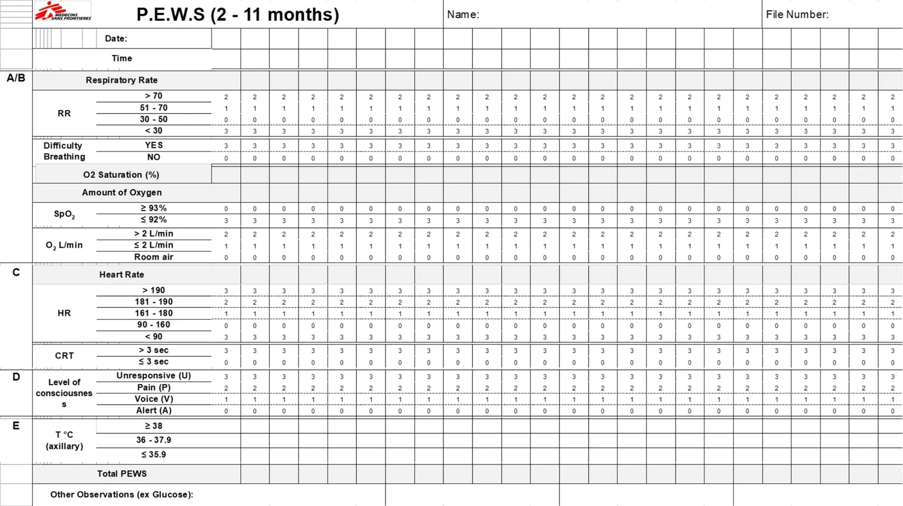
اضغط على الاستمارة لعرضها بحجم كامل.
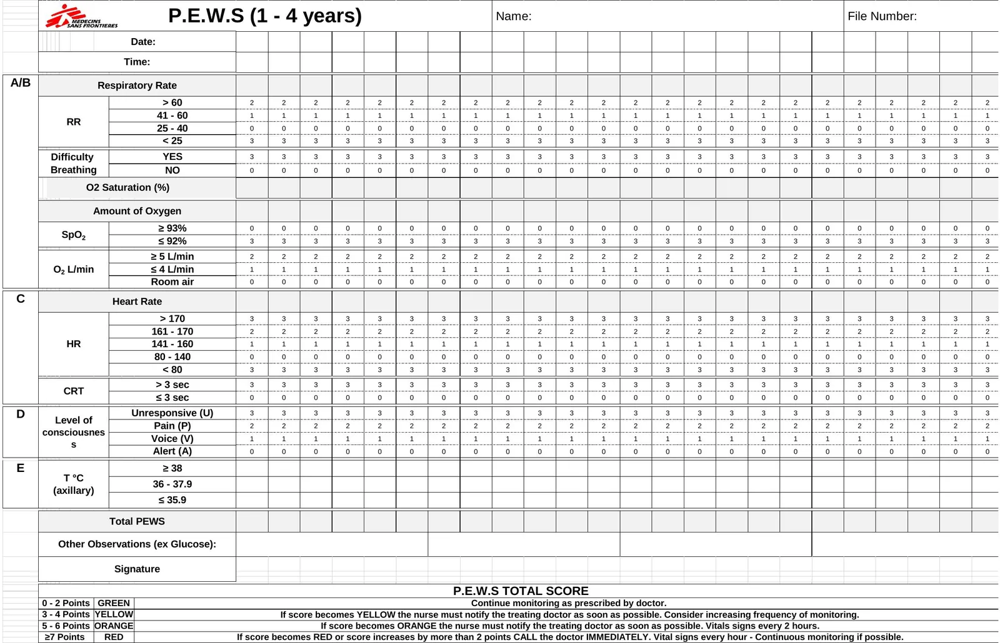
اضغط على الاستمارة لعرضها بحجم كامل.
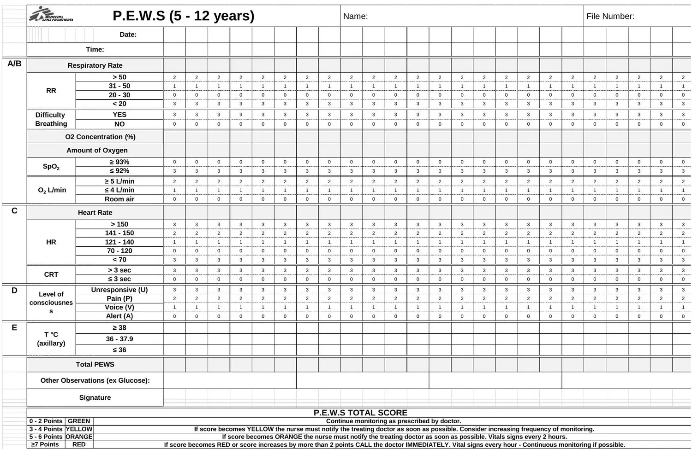
اضغط على الاستمارة لعرضها بحجم كامل.
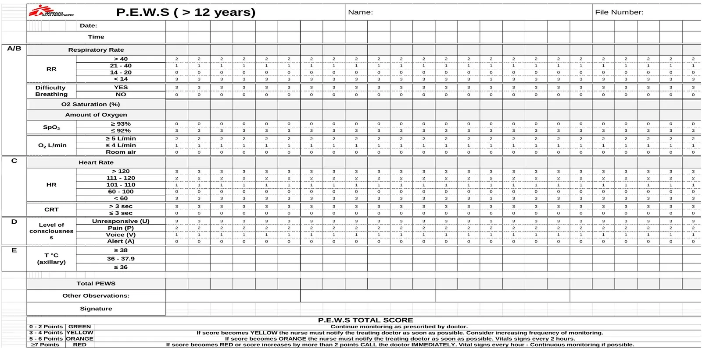
اضغط على الاستمارة لعرضها بحجم كامل.
ثلاث حالات سريرية — احسب، صنّف، قرّر
صعوبة في التنفس: نعم
على أكسجين: 1 لتر/دقيقة
بدون أكسجين: هواء الغرفة
شكرًا لحسن متابعتكم — الأسئلة والنقاش مرحّب بهما.